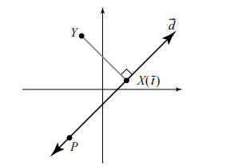
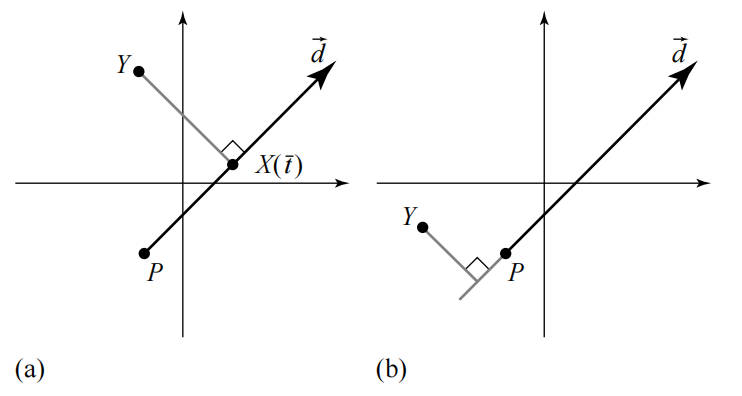
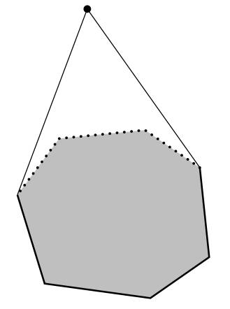

点到直线的距离 #
本文介绍直线的表示方式，以及如何计算一个点到直线的距离。
直线的表示方式 #
参数化形式 #
直线的参数化形式是通过直线的方向向量定义的，假设直线的方向向量为 d，直线上有一点 P，则直线上的任意一点都存在一个 t，可以使点用 P+td表示。
所以直线的参数化形式为：
X(t)=P+tdt∈R对于射线，也可以用这个公式表示，只不过射线的参数满足 t>0。
隐含形式 #
假设直线的法向量是 n，直线上的某个点用 X=(x0,x1) 表示，如果点 P 是直线上的一个点，则向量 PX与 n的点积为 0。即 n⋅(X−P)=n⋅X−n⋅P=0，另 n⋅P=d，则可得到：
n⋅X=d这就是直线的隐含表示方式（法线形式）。
点到直线的距离 #
参数化形式 #
对于参数化直线方程 X(t)=P+td，要计算点到直线的距离，就是要计算点到其再直线上的投影点的距离，例如下图中点 Y 到 X(t) 的距离。

首先要明确的是 Y−X(t) 一定是垂直与直线向量 d的，所以两个向量的点积为 0。
0=d⋅(Y−X(t))=d⋅(Y−P−td)=d⋅(Y−P)−t∣d∣2所以投影点的参数 t=d⋅(Y−P)/∣d∣2。
所以点到直线的距离的平方就是 ∣Y−(P+td)∣2。
隐含形式 #
如果直线的方程是用法向量表示的 n⋅X=c，点到直线上最近的一个点 K，一定存在一个 s 满足 Y=K+sn，将等式两边点乘一个 n得到 n⋅Y=n⋅K+s∣n∣2=c+s∣n∣2，所以 s=(n⋅Y−c)/∣n∣2。
点到直线的距离为 ∣Y−K∣=∣s∣∣n∣，即：
Distance(Y,Line)=∣n∣n⋅Y−c如果法向量是单位向量，上述公式简化为：
Distance(Y,Line)=n⋅Y−c点到射线的距离 #
当能够计算点到直线的距离时，点到射线的距离也就很容易计算了。射线上的起点为 P，方向向量为 d。

- d⋅(Y−P)>0: 如果点 Y 的投影点 X(t) 在射线上时，点到射线的最近点就是投影点 X(t)，如上图 a 所示。
- d⋅(Y−P)≤0：如果点 Y 的投影点 X(t) 不在射线上时，点到射线的最近点就是射线的起点 P，如上图 b 所示。
点到线段的距离 #
点到线段的距离分为三种情况。点的投影点 (t) 可能在线段的起点前、终点后或者落到线段上。
- 投影点 (t) 在起点前，点到线段的最近点为起点
- 投影点 (t) 在终点后，点到线段的最近点为终点
- 投影点 (t) 在线段上，到店线段的最近点为 (t)
点到凸多边形的距离 #
计算点 X 到多边形的距离就变得十分简单，只需要计算点 X 到每条边的距离，然后取最小值即可。
这样简单粗暴的方式并不是这里要说明的。凸多边形（convex polygon）有一个性质，对于凸多边形外的点，凸多边形总有一些边对点是不可见的，所以计算点到凸多边形的距离，只需要计算点到可见边的最小距离。

图中可见边用虚线表示，不可见边用实线表示。所以问题就变成了过滤不可见边。
假设凸多边形由 P0⋅Pn 表示，每条边 PiPi+1 都有一个指向凸多边形内部的法向量 ni，如果一条边满足 (X−Pi)⋅ni<0 则该边就是可见边。
这种利用点积过滤的方式，速度非常快，避免了计算每条边到点 X 的距离。
另一种判断可见边的方式是，画一条线段 XPi，如果 XPi 与凸多边形的某条边相交则表示该边是不可见边，但是该算法需要计算线段线段相交性，速度不快，所以不提倡用这种方式。
（完）